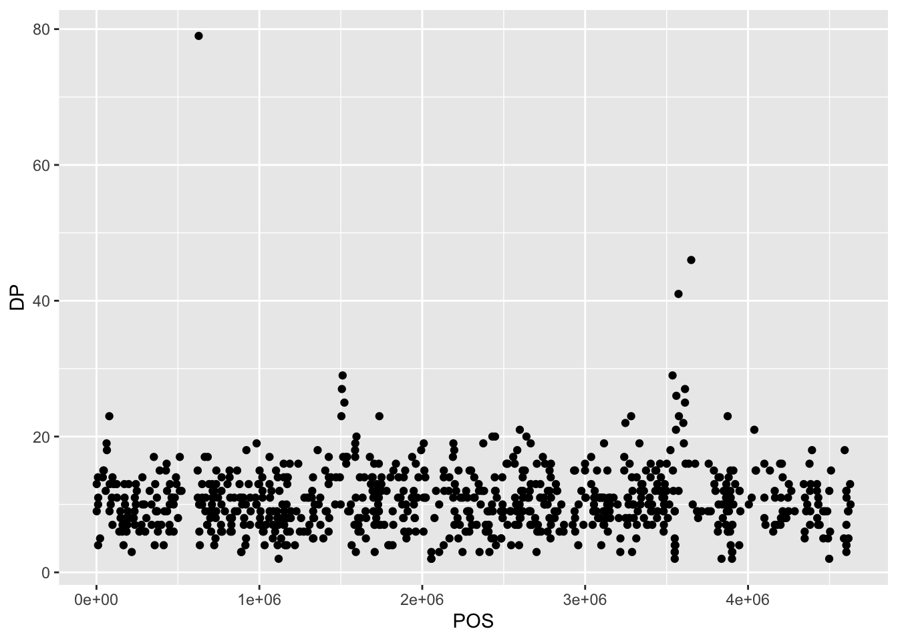

6 Starting with Data
6.1 Download the data
Make a new RStudio Project and create a data directory in your RStudio Project.
You can download the file directly from dropbox using this link. Remember to put this file in a directory that makes sense (ex. in your RStudio Project directory in a data directory).
6.2 CSV files
Spreadsheet data is often saved in one of the following formats:
- A Comma Separated Values
.csvfile. You can think of a.csvfile as a bare-bones spreadsheet where:- Each line in the file corresponds to one row of data/one observation.
- Values for each line are separated with commas. In other words, the values of different variables are separated by commas.
- The first line is often, but not always, a header row indicating the names of the columns/variables.
- Each line in the file corresponds to one row of data/one observation.
- An Excel
.xlsxfile. This format is based on Microsoft’s proprietary Excel software. As opposed to a bare-bones.csvfiles,.xlsxExcel files sometimes contain a lot of meta-data, or put more simply, data about the data. Some examples of spreadsheet meta-data include the use of bold and italic fonts, colored cells, different column widths, and formula macros.
- A Google Sheets file, which is a “cloud” or online-based way to work with a spreadsheet. Google Sheets allows you to download your data in both comma separated values
.csvand Excel.xlsxformats however: go to the Google Sheets menu bar -> File -> Download as -> Select “Microsoft Excel” or “Comma-separated values.”
There are several ways to import data into R. Here, we will use the tools every R installation comes with (ie. “base R”) to import a comma-delimited file containing some data. We will need to load the file using a function called read.csv().
EXERCISE
Before using the read.csv() function, use R’s help feature to answer the following questions:
- What is the default parameter for ‘header’ in the read.csv() function?
- What argument would you have to change to read a file that was delimited by semicolons (;) rather than commas?
- What argument would you have to change to read file in which numbers used commas for decimal separation (i.e. 1,00)?
- What argument would you have to change to read in only the first 10,000 rows of a very large file?
6.3 Sidenote: Importing data from Excel
Excel is one of the most common formats, so we need to discuss how to make these files play nicely with R. The simplest way to import data from Excel is to save your Excel file in .csv format. You can then import into R right away. Sometimes you may not be able to do this (imagine you have data in 300 Excel files, are you going to open and export all of them?).
One common R package (a set of code with features you can download and add to your R installation) is the readxl package which can open and import Excel files.
6.4 Import data
Now let’s read in some data. We’re going to study a population of Escherichia coli (designated Ara-3), which were propagated for more than 40,000 generations in a glucose-limited minimal medium. This medium was supplemented with citrate, which the ancestral E. coli cannot metabolize in the aerobic conditions of the experiment. Sequencing of the populations at regular time points revealed that spontaneous citrate-using mutants (Cit+) appeared at around 31,000 generations in one of twelve populations. The dataset is stored as a comma separated value (CSV) file. This metadata describes information on the Ara-3 clones and the columns represent:
| Column | Description |
|---|---|
| sample | clone name |
| generation | generation when sample frozen |
| clade | based on a parsimony tree |
| strain | ancestral strain |
| cit | citrate-using mutant status |
| run | sequence read archive sample ID |
| genome_size | size in Mbp |
Read in the metadata file:
This statement doesn’t produce any output because assignment doesn’t display anything. If we want to check that our data has been loaded, we can print the variable’s value: metadata.
This will output the entire dataset. If we only want to see the top 6 lines of the file to ensure it has been loaded, use the head() function:
## sample generation clade strain cit run genome_size
## 1 REL606 0 N/A REL606 unknown 4.62
## 2 REL1166A 2000 unknown REL606 unknown SRR098028 4.63
## 3 ZDB409 5000 unknown REL606 unknown SRR098281 4.60
## 4 ZDB429 10000 UC REL606 unknown SRR098282 4.59
## 5 ZDB446 15000 UC REL606 unknown SRR098283 4.66
## 6 ZDB458 20000 (C1,C2) REL606 unknown SRR098284 4.636.5 What are data frames?
A data frame is the standard way in R to store tabular data. It can also be thought of as a collection of vectors, all of which have the same length. Each vector represents a column and each vector can be a different data type (ex. characters, integers).
The str() function is useful to insepct the data types of the columns.
## 'data.frame': 30 obs. of 7 variables:
## $ sample : Factor w/ 30 levels "CZB152","CZB154",..: 7 6 18 19 20 21 22 23 24 25 ...
## $ generation : int 0 2000 5000 10000 15000 20000 20000 20000 25000 25000 ...
## $ clade : Factor w/ 8 levels "(C1,C2)","C1",..: 6 8 8 7 7 1 1 1 2 4 ...
## $ strain : Factor w/ 1 level "REL606": 1 1 1 1 1 1 1 1 1 1 ...
## $ cit : Factor w/ 3 levels "minus","plus",..: 3 3 3 3 3 3 3 3 3 3 ...
## $ run : Factor w/ 30 levels "","SRR097977",..: 1 5 22 23 24 25 26 27 28 29 ...
## $ genome_size: num 4.62 4.63 4.6 4.59 4.66 4.63 4.62 4.61 4.65 4.59 ...EXERCISE
Create a data frame using the data.frame() function:
# Create the data frame
BMI <- data.frame(gender = c("male", "male", "female"), height = c(152, 171.5, 165), weight = c(81, 93, 78), age = c(42, 36, 26))
# Pring the data frame
BMI## gender height weight age
## 1 male 152.0 81 42
## 2 male 171.5 93 36
## 3 female 165.0 78 26Try the following functions on the BMI data frame:
dim()nrow()ncol()summary()rownames()colnames()
What information does each of these functions tell you?
Saving or “writing” a data frame
We can save a data frame to a csv file using the write.csv() function. For example, to save the BMI data to bmi.csv:
Ensure that you have successfully saved this csv file, then feel free to delete it.
6.6 What are factors?
Factors are the final major data structure we will introduce. Factors can be thought of as vectors which are specialized for categorical data. Given R’s specialization for statistics, this make sense since categorial and continuous variables usually have different treatments. Sometimes you may want to have data treated as a factor, but in other cases, this may be undesirable.
Factors are stored as integers, and have labels associated with these unique integers. While factors look (and often behave) like character vectors, they are actually integers under the hood, and you need to be careful when treating them like strings.
## 'data.frame': 30 obs. of 7 variables:
## $ sample : Factor w/ 30 levels "CZB152","CZB154",..: 7 6 18 19 20 21 22 23 24 25 ...
## $ generation : int 0 2000 5000 10000 15000 20000 20000 20000 25000 25000 ...
## $ clade : Factor w/ 8 levels "(C1,C2)","C1",..: 6 8 8 7 7 1 1 1 2 4 ...
## $ strain : Factor w/ 1 level "REL606": 1 1 1 1 1 1 1 1 1 1 ...
## $ cit : Factor w/ 3 levels "minus","plus",..: 3 3 3 3 3 3 3 3 3 3 ...
## $ run : Factor w/ 30 levels "","SRR097977",..: 1 5 22 23 24 25 26 27 28 29 ...
## $ genome_size: num 4.62 4.63 4.6 4.59 4.66 4.63 4.62 4.61 4.65 4.59 ...Here we can see which columns/variables are factors. When we read in a file, any column that contains text is automatically assumed to be a factor. Once created, factors can only contain a pre-defined set values, known as levels. By default, R always sorts levels in alphabetical order.
For instance, we see that cit is a Factor w/ 3 levels, "minus", "plus" and "unknown".
The $ sign
To isolate a column or variable of a data frame, we use the $ operator. This applies to any type of variable. For example:
## [1] REL606 REL1166A ZDB409 ZDB429 ZDB446 ZDB458 ZDB464* ZDB467
## [9] ZDB477 ZDB483 ZDB16 ZDB357 ZDB199* ZDB200 ZDB564 ZDB30*
## [17] ZDB172 ZDB158 ZDB143 CZB199 CZB152 CZB154 ZDB83 ZDB87
## [25] ZDB96 ZDB99 ZDB107 ZDB111 REL10979 REL10988
## 30 Levels: CZB152 CZB154 CZB199 REL10979 REL10988 REL1166A REL606 ... ZDB99## [1] 4.62 4.63 4.60 4.59 4.66 4.63 4.62 4.61 4.65 4.59 4.61 4.62 4.62 4.63 4.74
## [16] 4.61 4.77 4.63 4.79 4.59 4.80 4.76 4.60 4.75 4.74 4.61 4.79 4.62 4.78 4.62To determine the number of levels of any factor, use the nlevels() function:
## [1] 30## [1] 8## [1] 1Let’s extract the cit column of the metadata to a new object, so we don’t end up modifying our original data frame.
## [1] unknown unknown unknown unknown unknown unknown unknown unknown unknown
## [10] unknown unknown unknown minus minus plus minus plus minus
## [19] plus minus plus plus minus plus plus minus plus
## [28] minus plus minus
## Levels: minus plus unknown## Factor w/ 3 levels "minus","plus",..: 3 3 3 3 3 3 3 3 3 3 ...For the sake of efficiency, R stores the content of a factor as a vector of integers, which an integer is assigned to each of the possible levels. Recall levels are assigned in alphabetical order. In this case, the first item in our cit object is unknown, which happens to be the 3rd level of our factor, ordered alphabeticaly.
6.7 Plotting and ordering factors
One of the most common uses for factors will be when you plot categorical values. For example, suppose we want to know how many of our clones had citrate-using mutant status? We could generate a plot:

This isn’t a particularly pretty example of a plot. But it can be a useful way to get acquainted with your data.
To reorder the levels of a factor:
## [1] unknown unknown unknown unknown unknown unknown unknown unknown unknown
## [10] unknown unknown unknown minus minus plus minus plus minus
## [19] plus minus plus plus minus plus plus minus plus
## [28] minus plus minus
## Levels: unknown plus minus
6.8 Subsetting data frames
Subsetting data frames is similar to subsetting vectors with one major difference: date frames are two-dimensional. Therefore, to select a specific value we will use the [] notation again, but we will specify more than one value.
EXERCISE
Try the following indices on the metadata data frame:
metadata[1,1]metadata[4,2]metadata[2,]metadata[1:4,1]metadata[,2]metadata$runmetadata[metadata$cit == "plus",]
What information does the last line tell you?
You can assign a subset of your data frame to a new object. For example, to create a new data frame of only observations from cit- samples:
## sample generation clade strain cit run genome_size
## 15 ZDB564 31500 Cit+ REL606 plus SRR098289 4.74
## 17 ZDB172 32000 Cit+ REL606 plus SRR098042 4.77
## 19 ZDB143 32500 Cit+ REL606 plus SRR098040 4.79
## 21 CZB152 33000 Cit+ REL606 plus SRR097977 4.80
## 22 CZB154 33000 Cit+ REL606 plus SRR098026 4.76
## 24 ZDB87 34000 C2 REL606 plus SRR098035 4.75
## 25 ZDB96 36000 Cit+ REL606 plus SRR098036 4.74
## 27 ZDB107 38000 Cit+ REL606 plus SRR098038 4.79
## 29 REL10979 40000 Cit+ REL606 plus SRR098029 4.786.9 Other data types
So far, we have looked at three data types: vectors, data frames, and factors. Here we will briefly cover matrices and lists. These two are not as useful but you may come across them. Later on in the workshop we will discuss tibbles, the tidyverse equivalent of the data frame.
Matrices
A matrix is a two-dimensional rectangular dataset. It can be created by using a vector input to the matrix function.
## [,1] [,2] [,3]
## [1,] "a" "a" "b"
## [2,] "c" "b" "a"To output the dimensions of a matrix, use the dim() function.
## [1] 2 3R will list the number of rows first and the number of columns second. To list only the number of rows or the number of columns, use the nrow() and ncol(). The length() function will output the total number of elements.
## [1] 2## [1] 3## [1] 6Lists
A list is an R-object which can contain many different types of elements inside it like vectors, functions, and even another list.
## [[1]]
## [1] 2 5 3
##
## [[2]]
## [1] 21.3
##
## [[3]]
## gender height weight age
## 1 male 152.0 81 42
## 2 male 171.5 93 36
## 3 female 165.0 78 26